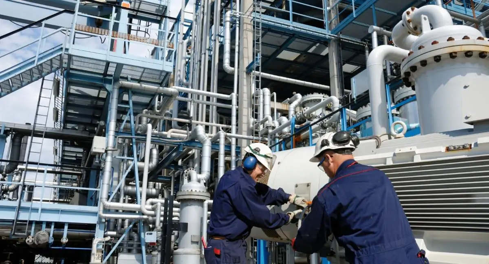
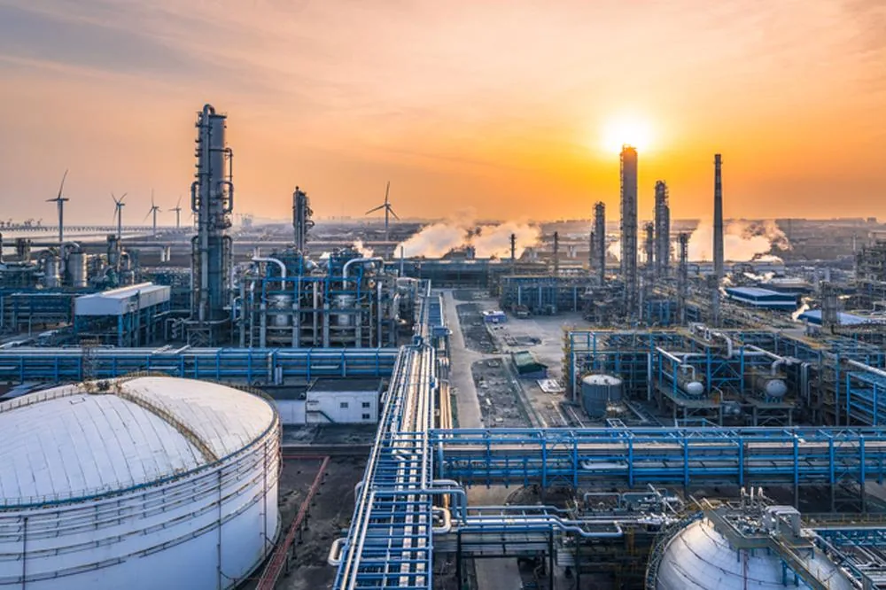

Modernizing refinery assets for lower emissions
We explore how digital controls and disciplined maintenance can improve efficiency while supporting environmental goals.
Read More
Loading Stackly experience...
We explore how digital controls and disciplined maintenance can improve efficiency while supporting environmental goals.
Read MoreA closer look at storage, cryogenic handling, and logistics practices that make LNG programs resilient.
Read MoreLearn how predictive analytics and remote visibility improve uptime across complex industrial assets.
Read More
Practical, phased modernization keeps current production stable while building a lower-carbon roadmap.
Read MoreHow connected teams, clear dashboards, and strong governance improve project confidence.
Read More
A practical review of inspection cadence, maintenance planning, and reliability culture.
Read More